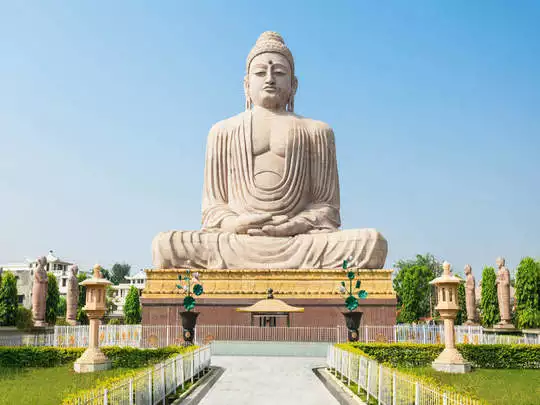
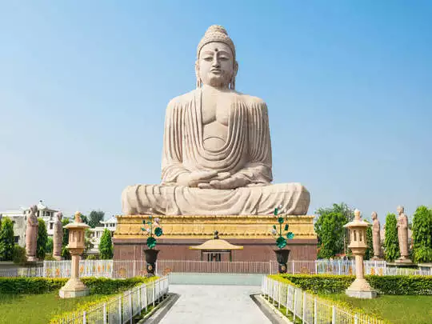

Bihar is a state in East India, bordering Nepal. It is divided by the River Ganges, which floods its fertile plains. Important Buddhist pilgrimage sites include the Bodhi Tree in Bodhgaya's Mahabodhi Temple, under which the Buddha allegedly meditated. In the state capital Patna, Mahavir Mandir temple is revered by Hindus, while Sikhs worship at the domed, riverside Gurdwara of Takht Sri Harmandir Sahib Ji.Bihar lies mid-way between West Bengal in the east and Uttar Pradesh in the west. It is bounded by the country of Nepal to the north and by the state of Jharkhand to the south. The Bihar plain is divided into two parts by the river Ganges which flows through the middle from west to east. Bihar has notified forest area of 6,764.14 km2, which is 6.8% of its geographical area. Hindi and Urdu are the official languages of the state, while the majority of the people speak Angika, Bhojpuri, Magadhi, Maithili and Bajjika.
 
